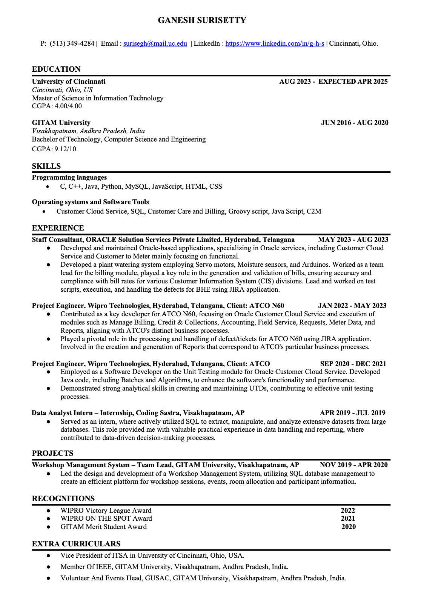

Hello! Welcome to My Profile Page!
Click on the link below to navigate to the "Web Application Programming and Hacking" page:
Headshot
About Me
Hello! My name is Ganesh Surisetty. I am currently pursuing my masters in Information Technology at University of Cincinnati, Ohio.
- Throughout my academic and professional journey, I have developed skills in SQL and Java Scripts, Groovy Scripts.
- I'm proficient in Python, C, SQL, HTML, and Groovy Scripts, and I have experience working on Oracle application such CCS and C2M where I have worked at Oracle and Wipro for three years.
- I have a keen interest in learning new things useful for my career, apart from professional, I am very interested and good at sports like Badminton, Cricket, and Volleyball. I'm always a nature lover.
- I'm excited to continue growing and expanding my knowledge in IT Field, and I'm actively seeking opportunities to contribute to innovative projects and make a positive impact.
Resume
Background
👇 Click on each tab to check complete information.
Education
Masters: 4 cgpa
Bachelors: 9.12 cgpa
Intermediate: 9.4 cgpa
10th: 9.5 cgpa
Skills
Experience
Staff Consultant, ORACLE Solution Services Private Limited, Hyderabad, Telangana MAY 2023 - AUG 2023
Project Engineer, Wipro Technologies, Hyderabad, Telangana, Client: ATCO N60 JAN 2022 - MAY 2023
Project Engineer, Wipro Technologies, Hyderabad, Telangana, Client: ATCO SEP 2020 - DEC 20
Projects
Data Analyst Intern - Internship, Coding Sastra, Visakhapatnam, AP APR 2019 - JUL 2019
Workshop Management System - Team Lead, GITAM University, Visakhapatnam, AP NOV 2019 - APR 2020